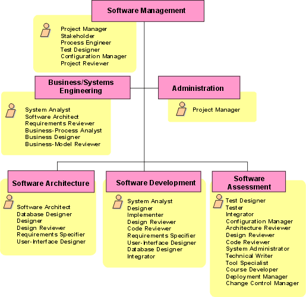
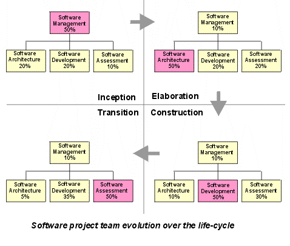

| Рекомендация: План разработки программного обеспечения |
 |
|
| Связанные элементы |
|---|
Определение длительности итерацииРанее мы определили итерацию как целостный мини-проект, в котором участвуют все дисциплины и в результате которого создается исполняемая, хотя и не полностью завершенная система - выпуск. Цикл - редактирование, компиляция, тестирование, отладка - это не итерация, пусть даже это понятие и похоже. Ежедневные или еженедельные компоновки, в которых увеличивается номер версии и тестируется все больше и больше элементов системы, также могут быть похожи на итерацию, но они являются только частью итерации в том смысле, как мы применяем этот термин. Итерация начинается с планирования и согласования требований и заканчивается выпуском, внутренним или внешним. Скорость выполнения итераций зависит главным образом от размера организации, ведущей разработку. Пример:
В числе прочих факторов можно отметить опыт организации в применении итеративного подхода, наличие отлаженных инструментов управления, степень автоматизации в работе с кодом (например, распределенное CM), способы распределения информации (например, внутренний web-сайт), автоматизированное тестирование и пр. Необходимо учитывать также дополнительные затраты, требуемые в итерации для планирования, синхронизации, анализа результатов и т.д. Поэтому, будь вы даже убеждены в неоспоримых преимуществах итеративного подхода, человеческие факторы замедлят темпы итераций. В таблице приведены некоторые опытные данные:
После того, как в примерном плане вы определили число итераций, требуется определить их наполнение. Будет также полезно придумать имя для обозначения продукта по окончании каждой итерации, чтобы людям было легче ориентироваться.
Определение числа итерацийВ очень простом проекте можно ограничиться одной итерацией на каждом из этапов.
Для более объемного проекта разработка будет вестись следующим образом:
Для большого проекта с рядом новых и неопробованных технологий схема может быть следующей:
Итак, цикл разработки может быть следующим:
Итак, в целом мы рассчитываем на то, что итераций будет от трех до десяти. С учетом того, что крайние случаи маловероятны, будем считать, что в большинстве проектов их бывает от шести до восьми. Риски, объем и сложность проекта могут вносить свои коррективы:
Сопоставление обзоров в традиционной водопадной последовательности с итеративным подходомВ проекте, разрабатываемом по методу водопада, в конце каждой стадии проводится критический обзор создаваемых рабочих продуктов, а именно:
В Rational Unified Process (RUP) обзор компонентов соответствующих рабочих продуктов проводится по их завершении в итерации, но вехи (и обзор, соответственно,) планируются на окончание четырех этапов, начального, уточнения, построения и внедрения. Руководитель проекта, желающий применять RUP, может столкнуться с необходимостью сгладить этот конфликт, возникающий, например, из-за обязательств по контракту. В идеале руководитель проекта должен попытаться убедить заказчика в том, что подход на основе этапов и итераций дает большую прозрачность хода проекта и снижает риски, вследствие чего отпадает необходимость в SRR, SSR и пр. Однако это не всегда возможно, и тогда руководитель проекта должен запланировать время для таких обзоров. В RUP можно указать моменты, в которые эти важные рабочие продукты, точнее говоря, их эквиваленты в RUP, оказываются фактически завершенными, хотя это не всегда совпадает с этапами или итерациями. Это сопоставление основывается на предположении о том, что усилия, затрачиваемые на выработку требований, проектирование и т.д. будут примерно одинаковыми в RUP и в идеальном водопадном цикле, хотя само распределение времени будет отличаться. Результат будет следующим:
Для большей эффективности руководитель проекта должен по согласованию с заказчиком запланировать эти обзоры на время требуемых обзоров RUP. Это легко достигается для SRR и PDR, которые можно совместить с обзором вехи цели и задач жизненного цикла и обзором архитектуры жизненного цикла соответственно. Организация проектаОсобенности проекта влияют как на процесс разработки программного обеспечения, так и на саму организацию проекта. На рисунке показана типичная структура, которую можно уточнить применительно к перечисленным далее факторам:
Эти факторы должны быть учтены при анализе того, как организация должна построить процесс разработки новой системы. Мы рассмотрим их влияние на выбор структуры проекта. На рисунке показана стандартная организация проекта и функции различных структурных элементов.  На рисунке показана структура организации проекта по умолчанию. Обратите внимание, что в порядке ролей не учитывается старшинство. Этот рисунок может служить отправной точкой для рассмотрения связи ролей в проекте и ответственных за участки работы в коллективе. Он также помогает понять, что роли (показанные в желтых прямоугольниках) - это не персоны, а функции персон или групп в проекте. Поэтому некоторые роли, например, руководитель проекта, показаны более одного раза. Это указывает, что функции руководителя проекта согласно RUP могут включаться в более чем одном коллективе. Например, в большом проекте задача подготовки отчета о состоянии на основе структуры распределения работы может возлагаться на сотрудника из группы администрирования. Однако в RUP эта задача относится к роли руководителя проекта. В небольшом проекте скорее всего сотрудник, назначенный руководителем проекта, будет выполнять все задачи роли руководителя проекта, и в этом случае группа администрирования не отделяется от группы управления программным обеспечением. Вариант структуры коллектива должен выбираться на основе характера и объема проекта с учетом следующих простых правил:
Принципы построения структуры организации подробно описаны в [ROY98]. В особенности при распределении обязанностей в группе оценки программного обеспечения следует помнить, что эта группа будет работать с программным обеспечением в наиболее приближенной к ситуации реального пользователя обстановке. В ходе проекта организация будет развиваться, чтобы соответствовать структуре этапов работы, описанной в плане проекта. Это проиллюстрировано на рисунке, взятом из [ROY98].  На каждом этапе в ходе проекта на передний план выступают определенные группы задач:
Переход участников из одной группы в другую в ходе этой эволюции обеспечит передачу знаний и навыков в проекте. Например, по завершении этапа уточнения часть сотрудников из группы архитектуры может быть передана в группу разработки, либо в качестве начальника группы, либо как носитель архитектурного видения разработки. Ближе к концу этапа построения возрастает роль группы оценки, и часть разработчиков могут быть переданы в группу оценки. На этом этапе также важно сохранить архитектурную целостность в ходе построения системы, поэтому роль группы архитектуры как центра интеграции всего проекта должна сохраняться. Для этого может оказаться полезным передать часть участников группы архитектуры в группу оценки. |
© Copyright IBM Corp. 1987, 2006. Все права защищены.. |